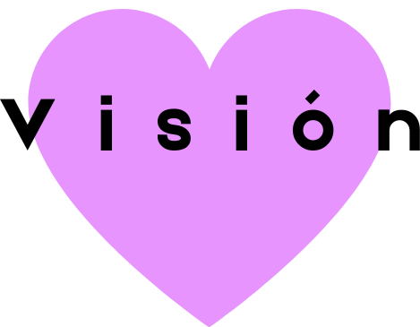
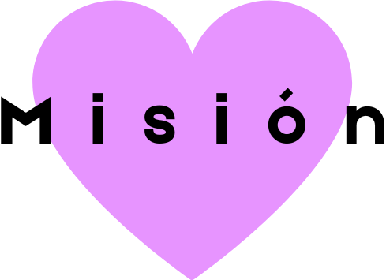

Mi nombre es Lurdes Belén Arias, tengo 18 años y el 3 de marzo de 2021 fui diagnosticada con leucemia linfoblástica tipo B, y como si fuera poco, tenia cromosoma philadelphia +, lo cual podía hacer que la leucemia vuelva en un futuro. No fue nada fácil pasar por la quimioterapia y sus miles de efectos secundarios, tampoco fue fácil tener que dejar de hacer las cosas que me gustaban o no tener mi “vida normal”. El cáncer a veces asusta, duele, y a veces cuesta asimilarlo, pero también te enseña muchas cosas, y sobre todo a disfrutar de la vida y de las pequeñas cosas de las que quizás antes del cáncer no agradecíamos. El 14 de diciembre fui trasplantada de médula ósea después de hacer 3 sesiones de rayos para vaciar mi médula y el 18 terminé mi tratamiento de quimioterapia, así fue mi curación final. Por todo lo que pasé y aprendí, me gustaría poder ayudar por este sitio web, ya sea dando consejos, informando u apoyando BIENVENIDOS!
 Nuestra misión es brindarles apoyo emocional y prácticos a pacientes con cualquier tipo de leucemia
La médula ósea es el tejido suave y graso que se encuentra dentro de sus huesos. La médula ósea contiene células madre, que son células inmaduras que se convierten en células sanguíneas.
Las personas que padecen enfermedades, como la leucemia, el linfoma y el mieloma, pueden ser tratadas con un trasplante de médula ósea. Hoy en día esto a menudo se denomina trasplante de células madre. Para este tipo de tratamiento, la médula ósea se obtiene de un donante. En ocasiones, las personas pueden donar su propia médula ósea.
La donación de médula ósea se puede hacer recolectando quirúrgicamente la médula ósea del donante o extrayendo células madre de la sangre del donante.